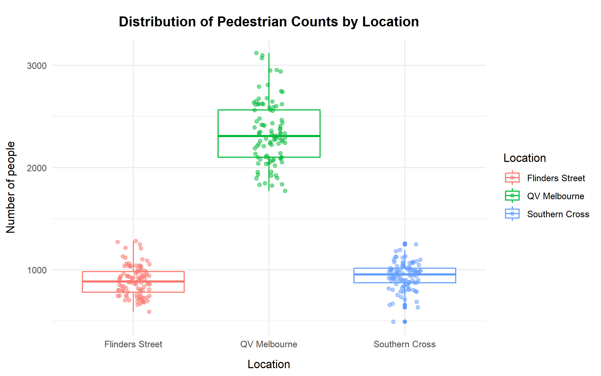
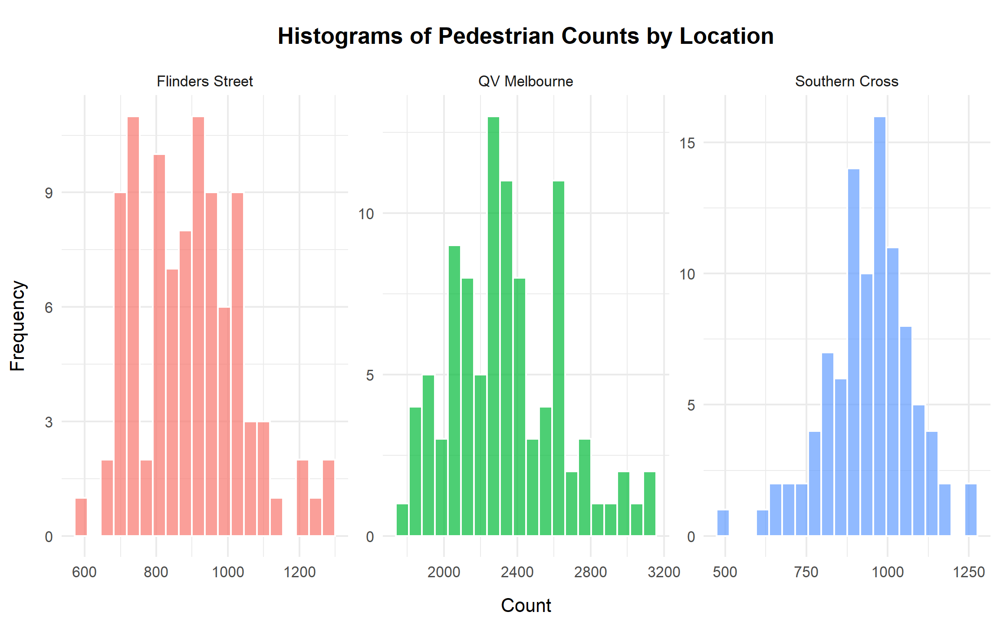
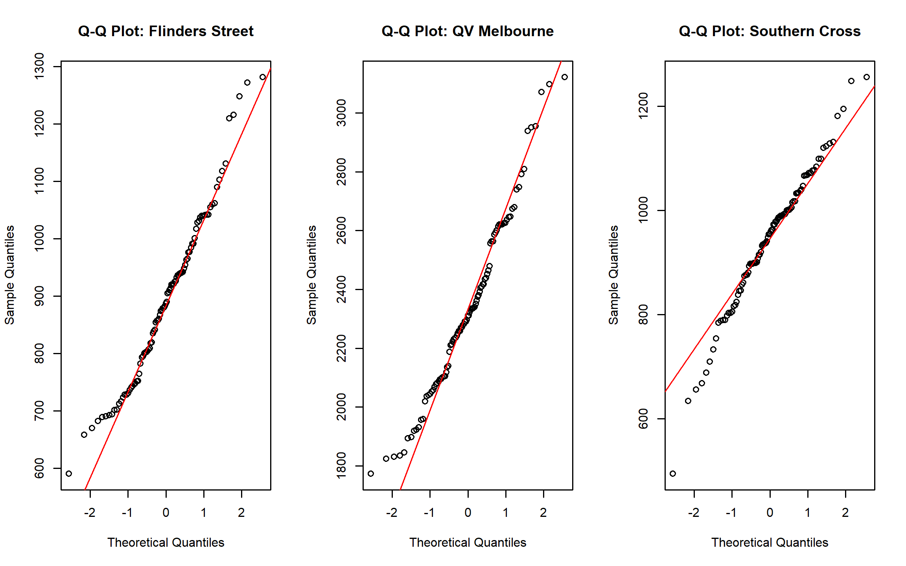
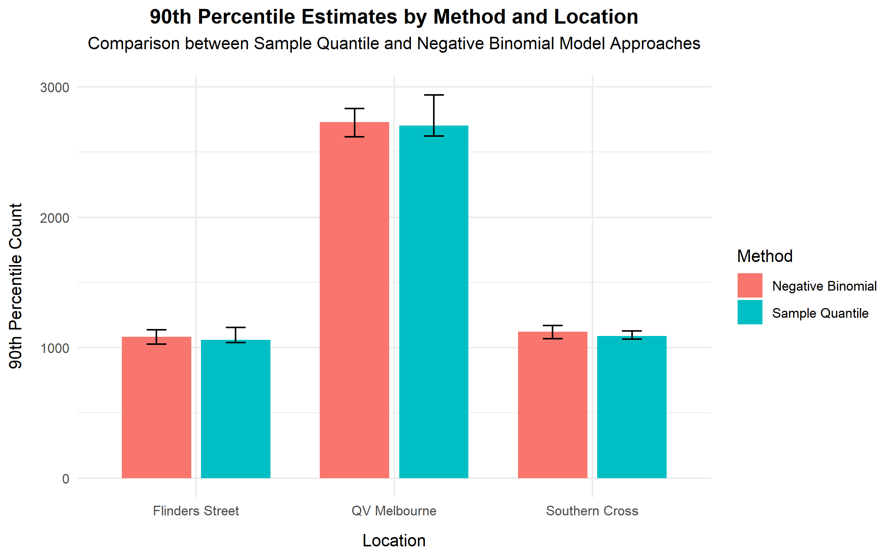
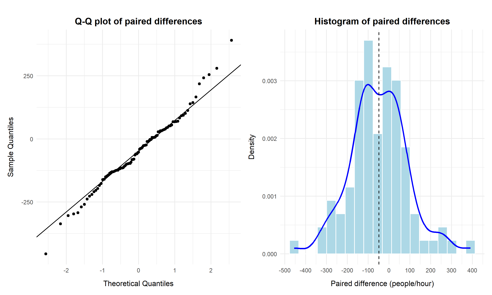
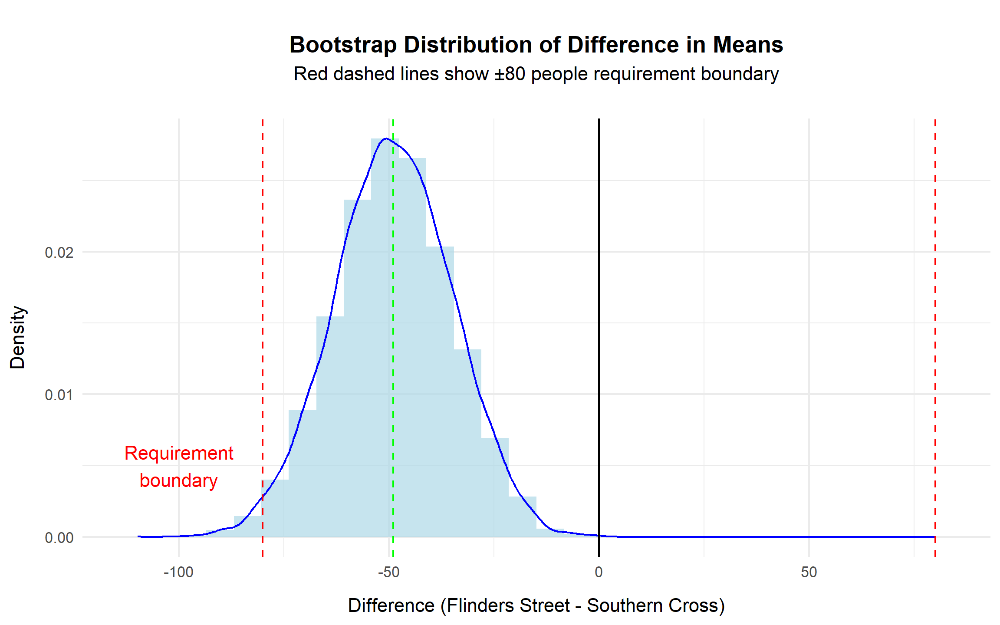
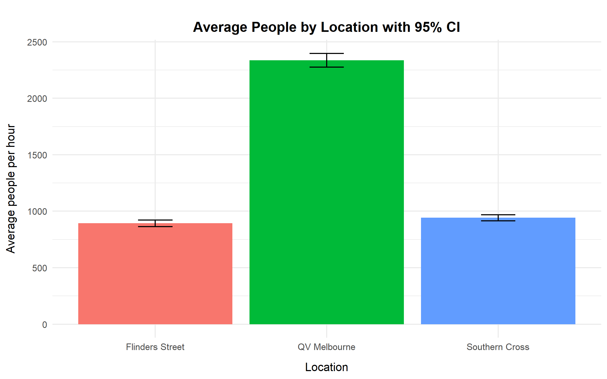
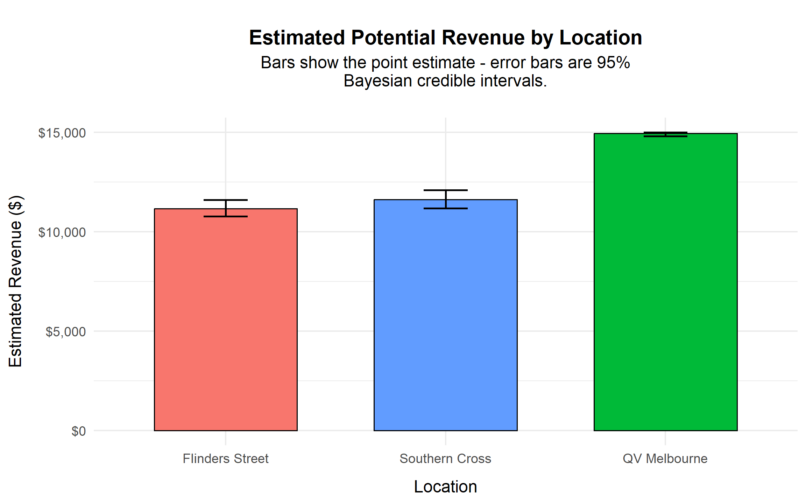

Show code
# Load libraries
library(readr)
library(tidyverse)
library(ggplot2)
library(dplyr)
library(boot)
library(knitr)
library(binom)
library(MASS)
library(broom)
library(moments)
library(patchwork)Optimising Advertising Revenue Using Urban Mobility Data
This report analyses pedestrian foot traffic at three major Melbourne locations: QV Melbourne, Southern Cross Station, and Flinders Street Station. The purpose of the analysis is to support evidence based decisions for pedestrian crossing design and advertising value assessment. The study combines exploratory analysis, statistical modelling, resampling methods, and Bayesian inference to produce reliable conclusions under uncertainty.
The results show that QV Melbourne consistently records the highest pedestrian volumes, with an average of approximately 2,300 people per hour. Its pedestrian flow is not only higher than the two railway stations but also more variable, indicating greater exposure during peak periods. In contrast, Southern Cross Station and Flinders Street Station have much lower and relatively similar average pedestrian counts, both remaining below 1,000 people per hour.
Statistical testing confirms that the difference in average pedestrian flow between Southern Cross Station and Flinders Street Station is small and well within the engineering tolerance of 80 people per hour. This supports the use of a single crossing design for both stations without compromising safety or capacity. Diagnostic checks further show that pedestrian counts exhibit substantial over dispersion, making simple Poisson assumptions unsuitable. A Negative Binomial model is therefore adopted throughout the analysis to obtain valid estimates and uncertainty measures.
Peak demand analysis using the 90th percentile highlights that QV Melbourne reaches traffic levels of around 2,700 people per hour, while both stations remain close to 1,100 people per hour. From a commercial perspective, Bayesian revenue estimation indicates that QV Melbourne provides the highest advertising value, with expected revenue close to the maximum payout under the proposed contract. Southern Cross Station and Flinders Street Station generate similar but substantially lower expected revenues.
Overall, the findings clearly distinguish QV Melbourne as the highest priority location for both capacity planning and advertising investment, while also demonstrating that the two railway stations can be treated as operationally equivalent for design purposes. The analysis provides a clear and defensible basis for infrastructure and pricing decisions.
This project uses daily pedestrian counts from three Melbourne locations (Southern Cross Station, Flinders Street Station, and QV Melbourne).
The dataset is stored locally as a CSV file and is transformed into a tidy (“long”) format to support consistent plotting and modelling across locations.
Analytical Environment
The following packages support the workflow:
# Load libraries
library(readr)
library(tidyverse)
library(ggplot2)
library(dplyr)
library(boot)
library(knitr)
library(binom)
library(MASS)
library(broom)
library(moments)
library(patchwork)Data Ingestion
First, reading the raw dataset. Each column represents a location, and each row corresponds to a day of observation.
# Read the data
pedestrians <- read_csv("data/pedestrians.csv")Variable Naming and Standardization
For improving clarity in tables and charts, the column names were renamed as in the code below.
# Rename
pedestrians <- pedestrians |>
rename(`Southern Cross` = southern_cross,
`Flinders Street` = flinders_street,
`QV Melbourne` = qv_melbourne)Convert from Wide to Long Format
The raw file is in wide format (one column per location). Most tidyverse workflows (e.g., ggplot, grouped summaries, and modelling by category) work best in long format, where:
# Convert from wide format to tidy long format
pedestrians_long <- pedestrians %>%
pivot_longer(cols = everything(),
names_to = "location",
values_to = "count")This tidy structure forms the foundation for all subsequent visualisation, statistical modelling, and inference tasks in this analysis.
The objective of this section is to examine and model the distribution of pedestrian counts at Southern Cross Station, Flinders Street Station, and QV Melbourne. Understanding the distributional characteristics of each location is essential for selecting an appropriate statistical framework for subsequent analysis.
Boxplots
Boxplots are used to compare the central tendency, dispersion, and presence of extreme observations across locations in a concise and interpretable format. The addition of jittered points allows individual daily observations to be visualised, providing greater transparency regarding variability and potential outliers.
# Create boxplots
ggplot(pedestrians_long, aes(x = location, y = count, color = location)) +
geom_boxplot() +
geom_jitter(width = 0.12, alpha = 0.5) +
labs(title = "Distribution of Pedestrian Counts by Location",
x = "Location", y = "Number of people", color = "Location") +
theme_minimal() +
theme(axis.title.x = element_text(margin = margin(t = 10)),
axis.title.y = element_text(margin = margin(r = 10)),
plot.title = element_text(hjust = 0.5, face = "bold",
margin = margin(t = 10, b = 10)))
The boxplots indicate that QV Melbourne consistently records the highest pedestrian volumes, with counts concentrated in the low-to-mid 2000s and several high-traffic days exceeding 3,000. In contrast, Flinders Street Station and Southern Cross Station exhibit substantially lower medians, both below 1,000. The jittered observations reveal that Southern Cross includes several unusually low-count days, confirming the presence of outliers. Overall, QV Melbourne demonstrates both the highest typical volume and the greatest variability among the three locations.
# Create histograms
ggplot(pedestrians_long, aes(x = count, fill = location)) +
geom_histogram(bins = 20, alpha = 0.7, color = "white") +
facet_wrap(~location, scales = "free") +
labs(title = "Histograms of Pedestrian Counts by Location",
x = "Count", y = "Frequency") +
theme_minimal() +
theme(legend.position = "none",
axis.title.x = element_text(margin = margin(t = 10)),
axis.title.y = element_text(margin = margin(r = 10)),
plot.title = element_text(hjust = 0.5, face = "bold",
margin = margin(t = 10, b = 10)))
The histograms further highlight differences in distributional shape. Flinders Street Station is tightly clustered between approximately 700 and 1,100, reflecting relatively stable but lower foot traffic. QV Melbourne centres around approximately 2,300, with a broader range extending well above 3,000, indicating both higher demand and greater volatility. Southern Cross lies between these two in terms of central tendency but exhibits occasional low-count days consistent with the boxplot findings. These distributional patterns suggest that variability differs substantially by location.
Descriptive Statistics
Descriptive statistics are computed to provide a numerical summary of central tendency, spread, and dispersion diagnostics.
# Descriptive statistics
desc_stats <- pedestrians_long %>%
group_by(location) %>%
summarise(
`n` = n(),
Mean = round(mean(count), 2),
Median = median(count),
SD = round(sd(count), 2),
#for Poisson diagnostics: variance vs mean
`Var over Mean` = round((var(count) / mean(count)), 2),
Min = min(count),
Max = max(count),
Q1 = quantile(count, 0.25),
Q3 = quantile(count, 0.75),
)
kable(desc_stats, caption = "Descriptive Statistics by Location", table.pos = "H")| location | n | Mean | Median | SD | Var over Mean | Min | Max | Q1 | Q3 |
|---|---|---|---|---|---|---|---|---|---|
| Flinders Street | 97 | 893.03 | 887 | 147.87 | 24.49 | 590 | 1282 | 782 | 984 |
| QV Melbourne | 97 | 2336.73 | 2310 | 304.89 | 39.78 | 1773 | 3122 | 2101 | 2563 |
| Southern Cross | 97 | 941.78 | 955 | 133.02 | 18.79 | 494 | 1256 | 874 | 1017 |
QV Melbourne records the highest average pedestrian count (mean ≈ 2337), substantially exceeding Southern Cross (≈ 942) and Flinders Street (≈ 893). Measures of spread also differ notably, with QV Melbourne exhibiting the largest standard deviation. Importantly, the variance-to-mean ratio is well above 1 for all locations, indicating strong over-dispersion. This violates the Poisson assumption of equal mean and variance and suggests that a Negative Binomial specification may be more appropriate.
Models
Prior to model estimation, it is necessary to assess whether standard distributional assumptions are satisfied. We first evaluate normality using Q–Q plots, then formally compare Poisson and Negative Binomial models to determine the most suitable count-based framework.
Q-Q Plots
Q–Q plots are used to assess whether a normal approximation would be reasonable for the daily count data. Substantial deviations from the reference line indicate skewness or heavy tails, supporting the use of specialised count models.
# Model Adequacy: Q-Q Plots
par(mfrow = c(1, 3))
qqnorm(pedestrians$`Flinders Street`, main = "Q-Q Plot: Flinders Street")
qqline(pedestrians$`Flinders Street`, col = "red")
qqnorm(pedestrians$`QV Melbourne`, main = "Q-Q Plot: QV Melbourne")
qqline(pedestrians$`QV Melbourne`, col = "red")
qqnorm(pedestrians$`Southern Cross`, main = "Q-Q Plot: Southern Cross")
qqline(pedestrians$`Southern Cross`, col = "red")
Across all three locations, the central portions of the distributions align moderately well with the reference line, while clear deviations occur in the tails. QV Melbourne exhibits the widest departures, consistent with its higher variability. These patterns indicate that normal-based inference would underestimate tail risk, reinforcing the need for count-based modelling approaches.
Poisson Regression and Negative Binomial
Given the count nature of the outcome variable, Poisson regression serves as a natural baseline model. However, the Poisson framework assumes equality of mean and variance. When over-dispersion is present, this assumption leads to underestimated uncertainty and potentially misleading inference. The Negative Binomial model extends the Poisson by introducing an additional dispersion parameter to accommodate excess variability.
# Fit Poisson and NB to one location's data, return a tidy row per model
fit_models_one_location <- function(df_loc) {
#Poisson
fit_p <- glm(count ~ 1, family = poisson(link = "log"), data = df_loc)
overdisp_p <- with(summary(fit_p), deviance / df.residual)
#Negative Binomial
fit_nb <- MASS::glm.nb(count ~ 1, data = df_loc)
tibble(
location = unique(df_loc$location),
model = c("Poisson", "Negative Binomial"),
est_mean = c(exp(coef(fit_p)[1]), unname(fit_nb$fit[1])),
dispersion = c(overdisp_p, NA_real_), #defined for Poisson
log_likelihood = c(as.numeric(logLik(fit_p)), as.numeric(logLik(fit_nb))),
AIC = c(AIC(fit_p), AIC(fit_nb))
)
}
# Apply to each location and mark the preferred model by AIC
t1_models <- pedestrians_long |>
group_split(location) |>
purrr::map_dfr(fit_models_one_location) |>
group_by(location) |>
mutate(Preferred = if_else(AIC == min(AIC), "Yes", "")) |>
ungroup()
# Display table
t1_models |>
knitr::kable(digits = 2,
caption = "Poisson vs Negative Binomial model comparison by location",
table.pos = "H")| location | model | est_mean | dispersion | log_likelihood | AIC | Preferred |
|---|---|---|---|---|---|---|
| Flinders Street | Poisson | 893.03 | 24.17 | -1578.07 | 3158.14 | |
| Flinders Street | Negative Binomial | 893.03 | NA | -620.01 | 1244.02 | Yes |
| QV Melbourne | Poisson | 2336.73 | 39.30 | -2351.15 | 4704.31 | |
| QV Melbourne | Negative Binomial | 2336.73 | NA | -690.47 | 1384.94 | Yes |
| Southern Cross | Poisson | 941.78 | 19.43 | -1353.60 | 2709.20 | |
| Southern Cross | Negative Binomial | 941.78 | NA | -614.56 | 1233.11 | Yes |
For all three locations, the Negative Binomial model yields a substantially lower AIC than the Poisson model, indicating superior goodness-of-fit. The Poisson dispersion statistics confirm that observed variability exceeds its theoretical assumptions. While estimated mean counts are similar across models, the Negative Binomial model more accurately captures the underlying dispersion and is therefore selected for subsequent analysis.
Conclusion
Pedestrian activity differs markedly across the three locations. QV Melbourne consistently exhibits the highest volume and the greatest variability, while Southern Cross and Flinders Street maintain lower but still variable traffic levels. Diagnostic checks confirm strong over-dispersion in all series, rendering the Poisson model inadequate. The Negative Binomial specification provides a statistically appropriate representation of the data and will be adopted for the remainder of the analysis.
The primary objective of this section is to estimate the 90th percentile of pedestrian traffic at each location. This percentile represents a high-demand threshold and is particularly relevant for infrastructure planning, capacity assessment, and operational risk management. Designing for the 90th percentile ensures that pedestrian crossings can accommodate peak conditions while maintaining acceptable flow for the vast majority of days.
Two complementary approaches are implemented to estimate the 90th percentile and its associated 95% confidence interval (CI). The first is a non-parametric sample quantile approach, which relies directly on the observed data and uses bootstrap resampling to quantify uncertainty. The second is a model-based approach, leveraging the Negative Binomial distribution identified in the previous section as the most appropriate representation of the data. A parametric bootstrap is performed under this model to generate a robust distribution of high-traffic thresholds.
Sample Quantile Approach
# Function to bootstrap 90th percentile
boot_q90 <- function(data, idx) {
d <- data[idx]
quantile(d, probs = 0.9, type = 7)
}
q90_sample <- pedestrians_long |>
group_by(location) |>
summarise(
q90 = quantile(count, 0.9),
.groups = "drop"
)
# Bootstrap 95% CI for each location
set.seed(123)
q90_boot <- pedestrians_long |>
group_split(location) |>
map_dfr(~{
b <- boot::boot(.x$count, statistic = boot_q90, R = 10000)
ci <- boot::boot.ci(b, type = "perc")$percent[4:5]
tibble(
Location = unique(.x$location),
`90th Percentile` = quantile(.x$count, 0.9),
`Sample CI Lower` = ci[1],
`Sample CI Upper` = ci[2]
)
})
# Display table
q90_boot |>
knitr::kable(caption = "90th Percentile Estimates with 95% CIs by Sample Quantile",
table.pos = "H")| Location | 90th Percentile | Sample CI Lower | Sample CI Upper |
|---|---|---|---|
| Flinders Street | 1060.8 | 1038.2 | 1154.8 |
| QV Melbourne | 2704.0 | 2622.2 | 2939.0 |
| Southern Cross | 1090.0 | 1066.4 | 1128.0 |
The sample quantile approach computes the 90th percentile directly from the observed data without imposing distributional assumptions. To assess uncertainty, a non-parametric bootstrap with 10,000 resamples is applied. Because the sampling distribution of high quantiles is not available in closed form, bootstrap resampling provides a practical and statistically sound method for constructing confidence intervals.
The resulting estimates indicate that the 90th percentile is approximately 1,061 at Flinders Street Station, 2,704 at QV Melbourne, and 1,090 at Southern Cross Station. The bootstrap confidence intervals provide plausible ranges around these estimates, reflecting sampling variability in the observed data.
Model Approach
# Set seed for reproducibity
set.seed(123)
# Negative Binomial model-based quantile
model_q90 <- pedestrians_long %>%
group_split(location) %>%
map_dfr(~{
fit_nb <- MASS::glm.nb(count ~ 1, data = .x)
mu <- exp(coef(fit_nb)[1])
size <- fit_nb$theta
q90 <- qnbinom(0.9, mu = mu, size = size)
# Parametric bootstrap from NB distribution
sim_q90 <- replicate(10000, {
sim <- rnbinom(length(.x$count), mu = mu, size = size)
quantile(sim, 0.9)
})
tibble(
Location = unique(.x$location),
`90th Percentile` = q90,
`Model CI Lower` = quantile(sim_q90, 0.025),
`Model CI Upper` = quantile(sim_q90, 0.975)
)
})
model_q90 |>
knitr::kable(caption = "90th Percentile Estimates with 95% CIs by Model Approach",
table.pos = "H", digits = 1)| Location | 90th Percentile | Model CI Lower | Model CI Upper |
|---|---|---|---|
| Flinders Street | 1084 | 1027.4 | 1136.6 |
| QV Melbourne | 2729 | 2615.6 | 2834.4 |
| Southern Cross | 1121 | 1069.2 | 1169.2 |
Given the demonstrated over-dispersion in the previous section, a Negative Binomial model is fitted separately for each location. Using the estimated mean (μ) and dispersion parameter (θ), the 90th percentile is derived analytically from the fitted distribution. To quantify uncertainty, a parametric bootstrap is conducted by simulating 10,000 datasets from the fitted model and recalculating the 90th percentile for each simulation.
The model-based estimates are approximately 1,084 for Flinders Street Station, 2,729 for QV Melbourne, and 1,121 for Southern Cross Station. The associated confidence intervals represent the range of high-traffic thresholds implied by the fitted Negative Binomial distribution.
Compared with the empirical quantile approach, the model-based results are very similar but exhibit slightly smoother behaviour. This is expected, as the model incorporates the estimated dispersion structure rather than relying solely on observed sample variation.
Compare Approaches
# Prepare data for Sample Quantile
sample_table <- q90_boot %>%
dplyr::select(Location, `90th Percentile`,
`Sample CI Lower`, `Sample CI Upper`) %>%
pivot_longer(
cols = -Location,
names_to = "Metric",
values_to = "Value"
) %>%
mutate(
Method = "Sample Quantile",
Metric = recode(Metric,
"Sample CI Lower" = "CI Lower",
"Sample CI Upper" = "CI Upper")
)
# Prepare data for Negative Binomial
model_table <- model_q90 %>%
dplyr::select(Location, `90th Percentile`,
`Model CI Lower`, `Model CI Upper`) %>%
pivot_longer(
cols = -Location,
names_to = "Metric",
values_to = "Value"
) %>%
mutate(
Method = "Negative Binomial",
Metric = recode(Metric,
"Model CI Lower" = "CI Lower",
"Model CI Upper" = "CI Upper")
)
# Merge 2 approaches
combined_table <- bind_rows(sample_table, model_table) %>%
pivot_wider(names_from = Location, values_from = Value) %>%
arrange(Method, factor(Metric,
levels = c("90th Percentile", "CI Lower", "CI Upper")))
# Display table
kable(
combined_table,
caption = "Summary of 90th Percentile Estimates and 95% CIs by Method and Location",
digits = 1,
align = "lcccc"
)| Metric | Method | Flinders Street | QV Melbourne | Southern Cross |
|---|---|---|---|---|
| 90th Percentile | Negative Binomial | 1084.0 | 2729.0 | 1121.0 |
| CI Lower | Negative Binomial | 1027.4 | 2615.6 | 1069.2 |
| CI Upper | Negative Binomial | 1136.6 | 2834.4 | 1169.2 |
| 90th Percentile | Sample Quantile | 1060.8 | 2704.0 | 1090.0 |
| CI Lower | Sample Quantile | 1038.2 | 2622.2 | 1066.4 |
| CI Upper | Sample Quantile | 1154.8 | 2939.0 | 1128.0 |
# Combine data for plotting
q90_boot$Method <- "Sample Quantile"
model_q90$Method <- "Negative Binomial"
q90_boot_2 <- q90_boot %>%
rename(CI_Lower = `Sample CI Lower`,
CI_Upper = `Sample CI Upper`)
model_q90_2 <- model_q90 %>%
rename(CI_Lower = `Model CI Lower`,
CI_Upper = `Model CI Upper`)
q90_plot_data <- bind_rows(q90_boot_2, model_q90_2)
# Visualization of 90th percentiles
ggplot(q90_plot_data, aes(x = Location, y = `90th Percentile`, fill = Method)) +
geom_col(position = position_dodge(0.8), width = 0.7) +
geom_errorbar(aes(ymin = CI_Lower, ymax = CI_Upper),
position = position_dodge(0.8), width = 0.2) +
labs(
title = "90th Percentile Estimates by Method and Location",
subtitle = "Comparison between Sample Quantile and Negative Binomial Model Approaches",
x = "Location",
y = "90th Percentile Count"
) +
theme_minimal() +
theme(axis.title.x = element_text(margin = margin(t = 10)),
axis.title.y = element_text(margin = margin(r = 10)),
plot.title = element_text(hjust = 0.5, face = "bold"),
plot.subtitle = element_text(hjust = 0.5, margin = margin(b = 15)))
Both approaches produce highly consistent estimates across all three locations, demonstrating strong agreement between the empirical and model-based frameworks. QV Melbourne consistently exhibits the highest 90th percentile (around 2,700), while the two railway stations remain near 1,100.
The close alignment between methods strengthens confidence in the robustness of the results. While the sample quantile reflects the raw data directly, the Negative Binomial approach provides a theoretically grounded estimate that accounts explicitly for over-dispersion. For decision-making purposes, the model-based estimates are preferable due to their statistical consistency and improved uncertainty representation.
Conclusion
The 90th percentile is a critical operational threshold, a level of pedestrian traffic exceeded on only 10% of days. QV Melbourne has the highest high-traffic threshold (approximately 2,700), substantially exceeding Southern Cross and Flinders Street, both of which are near 1,100.
The strong agreement between empirical and model-based approaches increases confidence in these findings. However, given the documented overdispersion in pedestrian counts, the Negative Binomial model provides the most reliable framework for planning and infrastructure design, as it explicitly accounts for excess variability in the data.
The objective of this section is to assess whether Flinders Street Station and Southern Cross Station exhibit sufficiently similar pedestrian volumes to justify implementing a single, standardised crossing design.
From an engineering perspective, the design requirement specifies that the difference in mean pedestrian flow between the two locations must not exceed 80 people per hour. If the true difference lies outside this tolerance band, separate designs would be required to ensure adequate safety and capacity.
Methodology
Because pedestrian counts at both stations were recorded concurrently on identical dates and times, the observations are naturally paired. A paired t-test is therefore the most appropriate analytical framework, as it accounts for shared day-to-day variation and estimates the mean difference (Flinders − Southern Cross) with a 95% confidence interval.
For robustness, two additional approaches are included:
A Welch two-sample t-test (assuming independence) for comparison.
A non-parametric bootstrap with 10,000 resamples of paired differences to obtain an empirical confidence interval and estimate the probability that the absolute mean difference is within ±80.
Validity of the Central Limit Theorem (CLT)
With 97 paired observations, the Central Limit Theorem implies that the sampling distribution of the mean difference will be approximately normal, even if the underlying daily differences exhibit mild departures from normality.
# Calculate skewness and kurtosis
x <- pedestrians$`Flinders Street`
y <- pedestrians$`Southern Cross`
diffs <- x - y
summary_stats <- tibble(
Mean = mean(diffs),
Skewness = skewness(diffs),
Kurtosis = kurtosis(diffs)
)
kable(summary_stats,
caption = "Skewness and kurtosis of paired differences", table.pos = "H")| Mean | Skewness | Kurtosis |
|---|---|---|
| -48.75258 | 0.1798553 | 3.873122 |
The skewness of 0.18 indicates near symmetry in the distribution of paired differences. This suggests that there is no systematic directional bias; on some days Flinders Street records slightly higher counts, while on others Southern Cross does.
The kurtosis value of 3.87 indicates mildly heavier tails than a normal distribution (which has kurtosis equal to 3). However, with n = 97, this level of tail behaviour does not compromise the validity of the CLT approximation.
# Draw Q-Q plot
p1 <- ggplot(data.frame(d = diffs), aes(sample = d)) +
stat_qq() + stat_qq_line() +
labs(title = "Q-Q plot of paired differences",
x = "Theoretical Quantiles", y = "Sample Quantiles") +
theme_minimal() +
theme(axis.title.x = element_text(margin = margin(t = 10)),
axis.title.y = element_text(margin = margin(r = 10)),
plot.title = element_text(hjust = 0.5, face = "bold",
margin = margin(t = 15, b = 5)),
plot.subtitle = element_text(hjust = 0.5,
margin = margin(b = 20)))# Draw histogram
p2 <- ggplot(data.frame(d = diffs), aes(x = d)) +
geom_histogram(aes(y = ..density..), bins = 20,
fill = "lightblue", color = "white") +
geom_density(color = "blue", linewidth = 1) +
geom_vline(xintercept = mean(diffs),
linetype = "dashed", color = "black") +
scale_x_continuous(breaks = seq(floor(min(diffs)/100)*100,
ceiling(max(diffs)/100)*100,
by = 100)) +
labs(title = "Histogram of paired differences",
x = "Paired difference (people/hour)", y = "Density") +
theme_minimal() +
theme(axis.title.x = element_text(margin = margin(t = 10)),
axis.title.y = element_text(margin = margin(r = 10)),
plot.title = element_text(hjust = 0.5, face = "bold",
margin = margin(t = 15, b = 5)),
plot.subtitle = element_text(hjust = 0.5,
margin = margin(b = 20)))
# Display Q-Q plot and histogram
p1 | p2
The Q–Q plot shows close alignment with the theoretical normal reference line, particularly in the central region. The histogram confirms approximate symmetry with limited tail deviation. These diagnostics support the appropriateness of the paired t-based inference.
Results
# Set seed for reproducibity
set.seed(123)
# Create a function
railway_analysis <- function() {
x <- pedestrians$`Flinders Street`
y <- pedestrians$`Southern Cross`
n <- length(x)
diffs <- x - y
# Basic statistics
diff_mean <- mean(diffs)
# Welch t-test CI
t_test <- t.test(x, y, conf.level = 0.95)
t_ci <- t_test$conf.int
# Paired t-test CI
t_test_paired <- t.test(diffs, conf.level = 0.95)
t_ci_paired <- t_test_paired$conf.int
# Bootstrap CI
boot_diff <- boot(data = cbind(x, y),
statistic = function(dat, i) {
mean(dat[i, 1]) - mean(dat[i, 2])
}, R = 10000)
boot_ci <- boot.ci(boot_diff, type = "perc")$percent[4:5]
# Probability that absolute difference < 80 (using bootstrap)
boot_diffs <- boot_diff$t
prob_within_80 <- mean(abs(boot_diffs) <= 80)
# Comprehensive results
results <- tibble(
Metric = c("Difference in Means", "Welch CI Lower", "Welch CI Upper",
"Paired CI Lower", "Paired CI Upper",
"Bootstrap CI Lower", "Bootstrap CI Upper",
"Bootstrap probability |diff| ≤ 80"),
Value = c(round(diff_mean, 2),
round(t_ci[1], 2), round(t_ci[2], 2),
round(t_ci_paired[1], 2), round(t_ci_paired[2], 2),
round(boot_ci[1], 2), round(boot_ci[2], 2),
paste0(round(prob_within_80 * 100, 1), "%"))
)
return(list(results = results, boot_diffs = boot_diffs))
}
# Create a summary table
railway_results <- railway_analysis()
kable(railway_results$results,
caption = "Comprehensive Difference Analysis Between Railway Stations",
table.pos = "H")| Metric | Value |
|---|---|
| Difference in Means | -48.75 |
| Welch CI Lower | -88.59 |
| Welch CI Upper | -8.92 |
| Paired CI Lower | -76.64 |
| Paired CI Upper | -20.86 |
| Bootstrap CI Lower | -76.73 |
| Bootstrap CI Upper | -21.69 |
| Bootstrap probability |diff| ≤ 80 | 98.6% |
The observed mean difference is −48.8 people per hour, indicating that Flinders Street records slightly fewer pedestrians on average than Southern Cross.
Because the data are paired, the paired t-test provides the most appropriate confidence interval. The 95% CI (−76.64, −20.86) lies entirely within the ±80 engineering tolerance threshold. The bootstrap confidence interval (−76.73, −21.69) is nearly identical, reinforcing the robustness of the estimate.
The Welch interval (−88.59, −8.92) is slightly wider due to the independence assumption, but it is less appropriate given the paired design.
Importantly, the bootstrap analysis indicates a 98.6% probability that the absolute mean difference is within ±80. This provides strong quantitative evidence that the stations are practically equivalent within the engineering tolerance.
# Visualization
ggplot(data.frame(diff = railway_results$boot_diffs), aes(x = diff)) +
geom_histogram(aes(y = ..density..),
bins = 30, alpha = 0.7, fill = "lightblue") +
geom_density(alpha = 0.5, color = "blue") +
geom_vline(xintercept = c(-80, 80), linetype = "dashed", color = "red") +
geom_vline(xintercept = 0, linetype = "solid", color = "black") +
geom_vline(xintercept = mean(railway_results$boot_diffs),
linetype = "dashed", color = "green") +
annotate("text", x = -100, y = 0.005,
label = "Requirement\nboundary", color = "red") +
labs(title = "Bootstrap Distribution of Difference in Means",
subtitle = "Red dashed lines show ±80 people requirement boundary",
x = "Difference (Flinders Street - Southern Cross)", y = "Density") +
theme_minimal() +
theme(axis.title.x = element_text(margin = margin(t = 10)),
axis.title.y = element_text(margin = margin(r = 10)),
plot.title = element_text(hjust = 0.5, face = "bold",
margin = margin(t = 15, b = 5)),
plot.subtitle = element_text(hjust = 0.5,
margin = margin(b = 20)))
The bootstrap distribution is centred near −50 and exhibits approximate symmetry. The red dashed lines represent the ±80 threshold defined by the engineering requirement. The overwhelming majority of simulated differences fall within this boundary, visually reinforcing the statistical conclusion.
Conclusion
Accounting for the paired data structure yields a precise and reliable estimate of the mean difference between the two stations. Both the analytical confidence interval and the bootstrap results indicate that the true difference lies comfortably within the ±80 people per hour tolerance threshold.
From an infrastructure planning perspective, the two stations can therefore be considered statistically equivalent for design purposes. A shared crossing specification is justified, provided that the final design accommodates the slightly higher observed demand at Southern Cross.
This section evaluates the commercial value of each location from an advertising perspective by estimating average pedestrian exposure. Because advertising revenue is directly linked to audience reach, locations with higher average pedestrian counts represent higher-value advertising assets.
95% CI for the mean (by locations)
To quantify average pedestrian exposure and the associated uncertainty, 95% confidence intervals are computed using both:
With 97 observations per site, the Central Limit Theorem supports the use of t-based confidence intervals. The bootstrap method serves as a robustness check that does not rely on distributional assumptions.
# Set seed for reproducibity
set.seed(123)
# Compute mean and 95% CI using t-distribution
mean_t <- with(pedestrians_long, {
aggregate(count ~ location, FUN = function(x) {
n <- length(x)
mean_x <- round(mean(x), 2)
sd_x <- sd(x)
error <- qt(0.975, df = n - 1) * sd_x / sqrt(n)
ci_lo <- round((mean_x - error), 2)
ci_hi <- round((mean_x + error), 2)
c(mean = mean_x, ci_lo = ci_lo, ci_hi = ci_hi)
})
})
mean_t <- do.call(data.frame, mean_t)
colnames(mean_t) <- c("Location", "Mean", "CI Lower (t)", "CI Upper (t)")
# Compute 95% CI using bootstrap
bootstrap_mean_ci <- function(data, R = 1000) {
# Define resampling function: compute mean for resampled data
boot_func <- function(data, indices) mean(data[indices])
# Run bootstrap with R resamples
boot_result <- boot(data, boot_func, R = R)
# Extract percentile-based 95% CI
ci <- boot.ci(boot_result, type = "perc")
# Return mean and CI bounds
c(mean = mean(data),
lower = ci$percent[4],
upper = ci$percent[5])
}
# Apply bootstrap for each location
mean_boot <- lapply(pedestrians, bootstrap_mean_ci)
mean_boot <- data.frame(
Location = names(pedestrians),
`ci_lower` = round((sapply(mean_boot, function(x) x["lower"])), 2),
`ci_upper` = round((sapply(mean_boot, function(x) x["upper"])), 2),
row.names = NULL
) %>%
rename(`CI Lower (boot)` = `ci_lower`,
`CI Upper (boot)` = `ci_upper`)
# Combine both CI methods (t-distribution + bootstrap)
combined_results <- mean_t %>%
left_join(mean_boot, by = "Location")
# Display table
kable(combined_results,
caption = "Mean Pedestrian Counts with 95% CIs (t-distribution vs Bootstrap)",
table.pos = "H")| Location | Mean | CI Lower (t) | CI Upper (t) | CI Lower (boot) | CI Upper (boot) |
|---|---|---|---|---|---|
| Flinders Street | 893.03 | 863.23 | 922.83 | 865.25 | 922.25 |
| QV Melbourne | 2336.73 | 2275.28 | 2398.18 | 2277.85 | 2396.27 |
| Southern Cross | 941.78 | 914.97 | 968.59 | 913.76 | 969.64 |
QV Melbourne records the highest average pedestrian volume at approximately 2,337 people per hour. The 95% confidence interval ranges from 2,275 to 2,398 using the t-method and 2,278 to 2,396 using bootstrap, demonstrating strong consistency between approaches.
Southern Cross Station averages approximately 942 people per hour (95% CI: 915 – 969 via t; 914 – 970 via bootstrap).
Flinders Street Station averages approximately 893 people per hour (95% CI: 863 – 923 via t, and 865 – 922 via bootstrap).
The near-identical confidence intervals across methods indicate that the estimates are statistically stable and not sensitive to modelling assumptions.
# Plot means with 95% CI error bars
ggplot(mean_t, aes(x = Location, y = Mean, fill = Location)) +
geom_col() +
geom_errorbar(aes(ymin = `CI Lower (t)`, ymax = `CI Upper (t)`), width = 0.2) +
labs(title = "Average People by Location with 95% CI",
x = "Location", y = "Average people per hour") +
theme_minimal() +
theme(legend.position = "none",
axis.title.x = element_text(margin = margin(t = 10)),
axis.title.y = element_text(margin = margin(r = 10)),
plot.title = element_text(hjust = 0.5, face = "bold",
margin = margin(t = 15, b = 5)),
plot.subtitle = element_text(hjust = 0.5,
margin = margin(b = 20)))
The bar chart with confidence intervals visually confirms the magnitude differences across sites. QV Melbourne’s interval does not overlap with either railway station, indicating substantially higher average exposure. In contrast, Southern Cross and Flinders Street have overlapping intervals, suggesting comparable audience sizes.
From a commercial standpoint, QV Melbourne clearly represents a higher-reach asset, while the two stations operate at a similar and substantially lower exposure tier.
Relative Value and Pricing Tiers
# Index relative to the largest mean (QV = 100)
index <- mean_t |>
ungroup() |>
mutate(
`Value Index` = round((100 * `Mean` / max(`Mean`)), 2),
Tier = case_when(
`Value Index` >= 90 ~ "Premium",
`Value Index` >= 70 ~ "Standard",
TRUE ~ "Economy"
)
)
kable(index,
caption = "Mean Pedestrian Counts with 95% CI and Pricing Tiers",
table.pos = "H")| Location | Mean | CI Lower (t) | CI Upper (t) | Value Index | Tier |
|---|---|---|---|---|---|
| Flinders Street | 893.03 | 863.23 | 922.83 | 38.22 | Economy |
| QV Melbourne | 2336.73 | 2275.28 | 2398.18 | 100.00 | Premium |
| Southern Cross | 941.78 | 914.97 | 968.59 | 40.30 | Economy |
To translate pedestrian exposure into pricing guidance, a relative value index is constructed using QV Melbourne as the benchmark (index = 100).
This implies that the two railway stations deliver roughly 40% of QV Melbourne’s exposure.
A practical pricing framework would therefore set:
Confidence intervals provide additional guidance for risk-adjusted pricing. If a conservative approach is preferred, pricing can be aligned with the lower bound of the confidence interval to account for variability in daily foot traffic.
Conclusion
QV Melbourne delivers the highest advertising exposure, with an average of approximately 2,337 people per hour and a tightly estimated confidence interval. Southern Cross and Flinders Street have similar audience sizes (approximately 900 – 950 people per hour) and substantially lower reach than QV Melbourne.
The non-overlapping confidence intervals confirm that QV Melbourne operates in a distinct, higher-value category. From a pricing perspective, it should be classified as Premium, while the two railway stations fall into an Economy tier at roughly 40% of the Premium rate.
This framework provides a data-driven basis for advertising pricing strategy, linking statistical estimation directly to commercial decision-making.
This section estimates expected revenue under a performance-linked advertising contract across three high-footfall locations: Southern Cross Station, Flinders Street Station, and QV Melbourne.
The contract structure offers:
where θ represents the proportion of days on which pedestrian traffic exceeds 1,000 people per hour.
This structure directly links revenue to exceedance probability, making accurate estimation of θ critical for commercial decision-making.
Bayesian Analysis
A Bayesian framework is adopted because it estimates θ directly on the natural probability scale (0–1) and produces credible intervals with intuitive interpretation — for example, “there is a 95% probability that θ lies within this range.”
This approach is particularly advantageous because:
A flat Beta(1,1) prior is used to reflect no prior preference. Observed exceedance counts update this prior to a Beta(k+1, n−k+1) posterior distribution. Posterior means and 95% credible intervals are then converted directly into revenue estimates.
# Define variables
base_fee <- 10000
bonus_fee <- 5000
threshold <- 1000
# Numeric posterior-to-revenue
t5_bayes_num <- pedestrians_long |>
group_split(location) |>
purrr::map_dfr(\(.df) {
n <- nrow(.df); k <- sum(.df$count > threshold)
#Beta(1,1) prior → posterior Beta(k+1, n−k+1), and convert θ to revenue
alpha_post <- 1 + k
beta_post <- 1 + (n - k)
theta_mean <- alpha_post / (alpha_post + beta_post)
theta_ci <- qbeta(c(0.025, 0.975), alpha_post, beta_post)
tibble(
location = unique(.df$location),
exceed_days = k,
n_days = n,
revenue_point = base_fee + bonus_fee * theta_mean,
revenue_low = base_fee + bonus_fee * theta_ci[1],
revenue_high = base_fee + bonus_fee * theta_ci[2]
)
}) |>
dplyr::arrange(dplyr::desc(revenue_point))
# Render the table
knitr::kable(t5_bayes_num, caption = "Revenue Estimation", table.pos = "H")| location | exceed_days | n_days | revenue_point | revenue_low | revenue_high |
|---|---|---|---|---|---|
| QV Melbourne | 97 | 97 | 14949.49 | 14815.29 | 14998.71 |
| Southern Cross | 31 | 97 | 11616.16 | 11175.95 | 12090.20 |
| Flinders Street | 22 | 97 | 11161.62 | 10774.82 | 11599.59 |
# Manager-facing table
t5_bayes_tbl <- t5_bayes_num |>
dplyr::mutate(
`Days exceed 1,000` = paste0(exceed_days, "/", n_days),
`Expected revenue` = scales::dollar(round(revenue_point, 0)),
`95% Credible Interval` = paste0(
scales::dollar(round(revenue_low, 0)), " – ",
scales::dollar(round(revenue_high, 0))
)
) |>
dplyr::select(
Location = location,
`Days exceed 1,000`,
`Expected revenue`,
`95% Credible Interval`
)
# Render the table
knitr::kable(t5_bayes_tbl,
caption = "Bayesian revenue under bank offer (95% credible intervals)",
align = c("l","c","r","c"), table.pos = "H")| Location | Days exceed 1,000 | Expected revenue | 95% Credible Interval |
|---|---|---|---|
| QV Melbourne | 97/97 | $14,949 | $14,815 – $14,999 |
| Southern Cross | 31/97 | $11,616 | $11,176 – $12,090 |
| Flinders Street | 22/97 | $11,162 | $10,775 – $11,600 |
The results indicate:
The revenue ranking is therefore:
QV Melbourne > Southern Cross > Flinders Street
Visualisation
The following chart presents expected revenue alongside 95% credible intervals. Locations are ordered by expected revenue to make the ranking immediately clear.
# Create the bar plot with error bars
t5_bayes_num |>
dplyr::mutate(location = reorder(location, revenue_point)) |>
ggplot(aes(x = location, y = revenue_point, fill = location)) +
geom_col(width = 0.65, color = "black", linewidth = 0.4) +
geom_errorbar(aes(ymin = revenue_low, ymax = revenue_high),
width = 0.2, linewidth = 0.6) +
scale_y_continuous(labels = scales::dollar) +
scale_fill_manual(values = c(
"Flinders Street" = "#F8766D",
"QV Melbourne" = "#00BA38",
"Southern Cross" = "#619CFF")) +
labs(
title = "Estimated Potential Revenue by Location",
subtitle = str_wrap("Bars show the point estimate - error bars are 95% Bayesian credible intervals.",
width = 55),
x = "Location", y = "Estimated Revenue ($)"
) +
theme_minimal(base_size = 12) +
theme(legend.position = "none",
axis.title.x = element_text(margin = margin(t = 10)),
axis.title.y = element_text(margin = margin(r = 10)),
plot.title = element_text(hjust = 0.5, face = "bold",
margin = margin(t = 15, b = 5)),
plot.subtitle = element_text(hjust = 0.5,
margin = margin(b = 20)))
The visual confirms that QV Melbourne operates near the maximum contract payout level, with minimal uncertainty. In contrast, the two railway stations produce materially lower revenue and exhibit greater relative uncertainty.
The separation between QV Melbourne and the two stations is economically meaningful, while the difference between Southern Cross and Flinders Street is comparatively small.
Conclusion
Under the performance-based advertising contract (base $10,000 + $5,000 × θ), QV Melbourne generates the highest expected revenue at approximately $14,950, effectively approaching the contract ceiling.
Southern Cross and Flinders Street generate similar expected revenues in the $11,000–$12,000 range, with overlapping credible intervals indicating comparable performance levels.
From a commercial perspective:
This analysis demonstrates how probabilistic modelling can be translated directly into contract evaluation and revenue strategy.